Судебная строительно-техническая экспертиза
Проводим экспертизы по определению суда: качество и объёмы строительных работ, дефекты, соответствие нормам и проектной документации.
Работаем по всей России
Экспертизы для суда и досудебного урегулирования, оценка недвижимости и бизнеса, рецензии на заключения других организаций. Опыт работы с 1996 года.

Проводим экспертизы по определению суда: качество и объёмы строительных работ, дефекты, соответствие нормам и проектной документации.
Независимое заключение до суда — для претензии, переговоров с подрядчиком или застройщиком и подготовки позиции по делу.
Определяем рыночную стоимость жилых и коммерческих объектов, земельных участков — для суда, сделок, залога и наследства.
Оценка стоимости компаний, долей и пакетов акций — для корпоративных споров, выхода участника и сделок.
Проверяем заключения и отчёты других организаций на методические ошибки и соответствие требованиям — для оспаривания в суде.
Опишите ситуацию — подскажем, какая экспертиза или оценка нужна.
Связаться →ООО «РОСТ-Консалт» — строительно-техническая экспертиза и оценка, опыт работы с 1996 года. Компания аккредитована в реестрах экспертных организаций арбитражных судов России, в том числе включена в реестр Арбитражного суда Республики Башкортостан (№250).
Ключевые эксперты нашей команды — специалисты с индивидуальным стажем в профессии свыше 20 лет.
Позвоните или напишите — расскажем, какая экспертиза нужна, и сориентируем по срокам.
ООО «РОСТ-Консалт»
ИНН 0274150400 · КПП 027401001
ОГРН 1100280032291
Юридический адрес: 450077, Республика Башкортостан, г. Уфа, ул. Коммунистическая, 128/4, стр. 2, офис 4
Банк: ПАО АКБ «Авангард», БИК 044525201